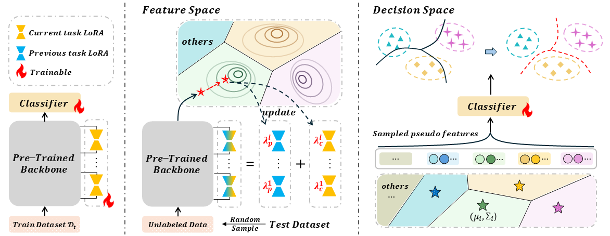

|
Fanhu Zeng I'm currently a Master student at Institute of Automation, Chinese Academy of Sciences (CASIA), supervised by Prof. Xu-Yao Zhang and Prof. Cheng-Lin Liu. My major is Pattern Recognition and Intelligent System. Before that, I obtained my Bachlor degree from Nanjing University of Aeronautics and Astronautics (NUAA) majoring in Automation. My research interests lie in Multimodal Large Language models, Efficient AI and Trustworthy AI. Email / Google Scholar / Github / LinkedIn 📣 I am looking for PhD opportunities starting in 25Fall, 26Spring or 26Fall. I would greatly appreciate it if you have any available positions or suggestions. |

|
Education
|
News |
Publications* indicates equal contribution |

|
Local-Prompt: Extensible Local Prompts for Few-Shot Out-of-Distribution Detection
Fanhu Zeng, Zhen Cheng, Fei Zhu, Hongxin Wei, Xu-Yao Zhang The Thirteenth International Conference on Learning Representations (ICLR), 2025 Paper / arXiv / Code |

|
HiDe-LLaVA: Hierarchical Decoupling for Continual Instruction Tuning of Multimodal Large Language Model
Haiyang Guo*, Fanhu Zeng*, Ziwei Xiang, Fei Zhu, Da-Han Wang, Xu-Yao Zhang, Cheng-Lin Liu Proceedings of the 63rd Annual Meeting of the Association for Computational Linguistics (ACL), 2025 arXiv / Code |

|
ChartEdit: How Far Are MLLMs From Automating Chart Analysis? Evaluating MLLMs’ Capability via Chart Editing
Xuanle Zhao, Xuexin Liu, Yang Haoyue, Xianzhen Luo, Fanhu Zeng, Jianling Li, Qi Shi, Chi Chen Findings of the Association for Computational Linguistics (ACL), 2025 arXiv / Code |
Preprints |

|
ModalPrompt: Dual-Modality Guided Prompt for Continual Learning of Large Multimodal Models
Fanhu Zeng, Fei Zhu, Haiyang Guo, Xu-Yao Zhang, Cheng-Lin Liu arXiv |

|
Towards Efficient and General-Purpose Few-Shot Misclassification Detection for Vision-Language Models
Fanhu Zeng, Zhen Cheng, Fei Zhu, Xu-Yao Zhang arXiv |

|
Federated Continual Instruction Tuning
Haiyang Guo, Fanhu Zeng, Fei Zhu, Wenzhuo Liu, Da-Han Wang, Jian Xu, Xu-Yao Zhang, Cheng-Lin Liu arXiv |
|  |
Dynamic Knowledge Consolidation for Rehearsal-Free Continual Learning
Haiyang Guo, Fei Zhu, Fanhu Zeng, Bing Liu, Xu-Yao Zhang arXiv |

|
TR-DQ: Time-Rotation Diffusion Quantization
Yihua Shao, Deyang Lin, Fanhu Zeng, Minxi Yan, Muyang Zhang, Siyu Chen, Yuxuan Fan, Ziyang Yan, Haozhe Wang, Jingcai Guo, Yan Wang, Haotong Qin, Hao Tang arXiv |
Academic Services
|
|
|
© Fanhu Zeng | Last updated: May, 2025